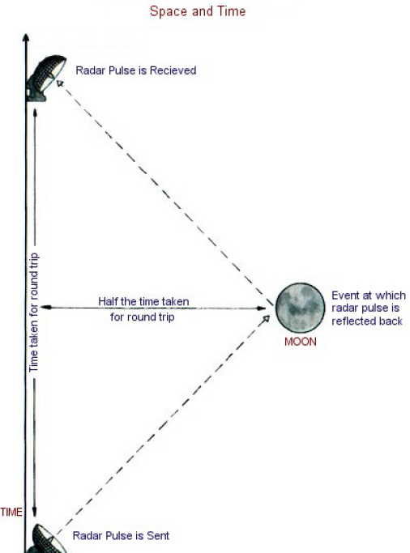
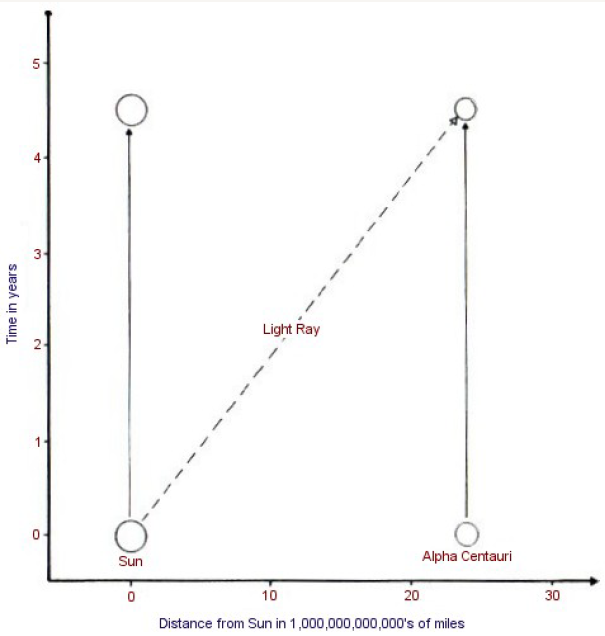
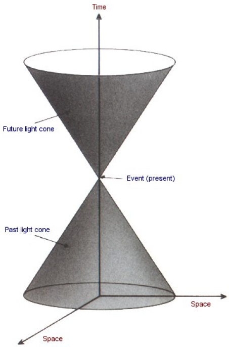
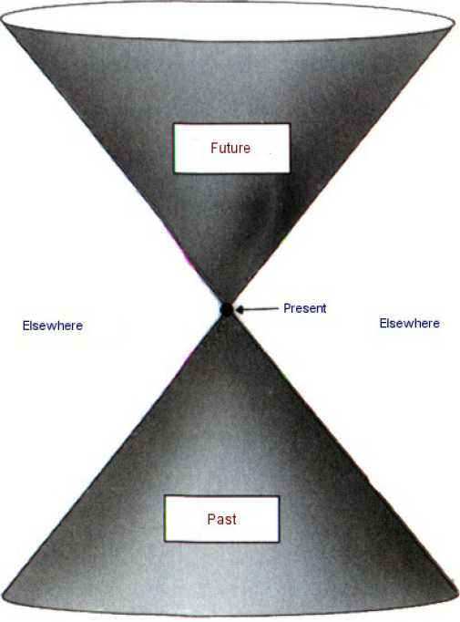
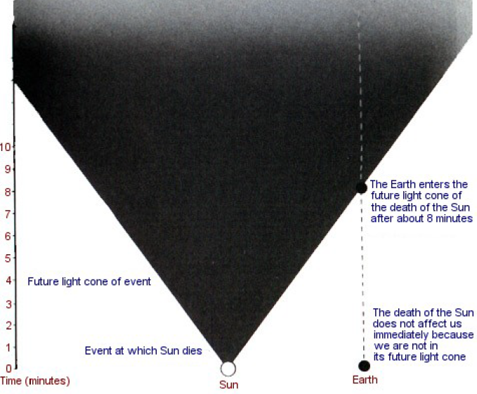
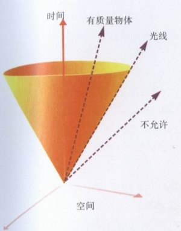
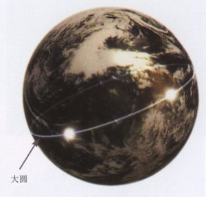
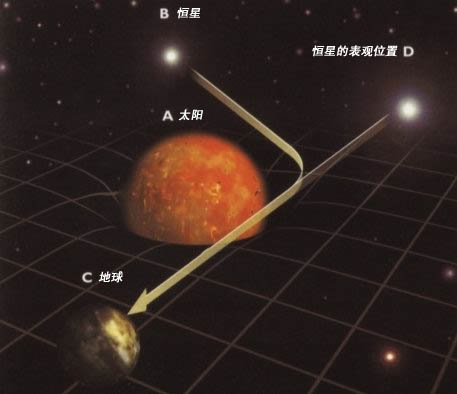

CHAPTER 2 SPACE AND TIME
第二章 空间和时间
Our present ideas about the motion of bodies date back to Galileo and Newton. Before them people believed Aristotle, who said that the natural state of a body was to be at rest and that it moved only if driven by a force or impulse. It followed that a heavy body should fall faster than a light one, because it would have a greater pull toward the earth.
我们现在关于物体运动的观念来自于伽利略和牛顿。在他们之前，人们相信亚里士多德，他说物体的自然状态是静止的，并且只在受到力或冲击作用时才运动。这样，重的物体比轻的物体下落得更快，因为它受到更大的力将其拉向地球。
The Aristotelian tradition also held that one could work out all the laws that govern the universe by pure thought: it was not necessary to check by observation. So no one until Galileo bothered to see whether bodies of different weight did in fact fall at different speeds. It is said that Galileo demonstrated that Aristotle’s belief was false by dropping weights from the leaning tower of Pisa. The story is almost certainly untrue, but Galileo did do something equivalent: he rolled balls of different weights down a smooth slope. The situation is similar to that of heavy bodies falling vertically, but it is easier to observe because the Speeds are smaller. Galileo’s measurements indicated that each body increased its speed at the same rate, no matter what its weight. For example, if you let go of a ball on a slope that drops by one meter for every ten meters you go along, the ball will be traveling down the slope at a speed of about one meter per second after one second, two meters per second after two seconds, and so on, however heavy the ball. Of course a lead weight would fall faster than a feather, but that is only because a feather is slowed down by air resistance. If one drops two bodies that don’t have much air resistance, such as two different lead weights, they fall at the same rate. On the moon, where there is no air to slow things down, the astronaut David R. Scott performed the feather and lead weight experiment and found that indeed they did hit the ground at the same time.
亚里士多德的传统观点还以为，人们用纯粹思维可以找出制约宇宙的定律：不必要用观测去检验它。所以，伽利略是第一个想看看不同重量的物体是否确实以不同速度下落的人。据说，伽利略从比萨斜塔上将重物落下，从而证明了亚里士多德的信念是错的。这故事几乎不可能是真的，但是伽利略的确做了一些等同的事——将不同重量的球从光滑的斜面上滚下。这情况类似于重物的垂直下落，只是因为速度小而更容易观察而已。伽利略的测量指出，不管物体的重量是多少，其速度增加的速率是一样的。例如，在一个沿水平方向每走10米即下降1米的斜面上，你释放一个球，则1秒钟后球的速度为每秒1米，2秒钟后为每秒2米等等，而不管这个球有多重。当然，一个铅锤比一片羽毛下落得更快，那是因为空气对羽毛的阻力引起的。如果一个人释放两个不遭受任何空气阻力的物体，例如两个不同的铅锤，它们则以同样速度下降。航天员大卫·斯各特在月亮上进行了羽毛和铅锤实验。因为没有空气阻碍东西下落。
Galileo’s measurements were used by Newton as the basis of his laws of motion. In Galileo’s experiments, as a body rolled down the slope it was always acted on by the same force (its weight), and the effect was to make it constantly speed up. This showed that the real effect of a force is always to change the speed of a body, rather than just to set it moving, as was previously thought. It also meant that whenever a body is not acted on by any force, it will keep on moving in a straight line at the same speed. This idea was first stated explicitly in Newton’s Principia Mathematica, published in 1687, and is known as Newton’s first law. What happens to a body when a force does act on it is given by Newton’s second law. This states that the body will accelerate, or change its speed, at a rate that is proportional to the force. (For example, the acceleration is twice as great if the force is twice as great.) The acceleration is also smaller the greater the mass (or quantity of matter) of the body. (The same force acting on a body of twice the mass will produce half the acceleration.) A familiar example is provided by a car: the more powerful the engine, the greater the acceleration, but the heavier the car, the smaller the acceleration for the same engine.
伽利略的测量被牛顿用来作为他的运动定律的基础。在伽利略的实验中，当物体从斜坡上滚下时，它一直受到不变的外力（它的重量），其效应是它被恒定地加速。这表明，力的真正效应总是改变物体的速度，而不是像原先想像的那样，仅仅使之运动。同时，它还意味着，只要一个物体没有受到外力，它就会以同样的速度保持直线运动。这个思想是第一次被牛顿在1687年出版的《数学原理》一书中明白地叙述出来，并被称为牛顿第一定律。物体受力时发生的现象则由牛顿第二定律所给出：物体被加速或改变其速度，其改变率与所受外力成比例。（例如，如果力加倍，则加速度也将加倍。）物体的质量（或物质的量）越大，则加速度越小，（以同样的力作用于具有两倍质量的物体则只产生一半的加速度。）小汽车可提供一个熟知的例子，发动机的功率越大，则加速度越大，但是小汽车越重，则对同样的发动机加速度越小。
In addition to his laws of motion, Newton discovered a law to describe the force of gravity, which states that every body attracts every other body with a force that is proportional to the mass of each body. Thus the force between two bodies would be twice as strong if one of the bodies (say, body A) had its mass doubled. This is what you might expect because one could think of the new body A as being made of two bodies with the original mass. Each would attract body B with the original force. Thus the total force between A and B would be twice the original force. And if, say, one of the bodies had twice the mass, and the other had three times the mass, then the force would be six times as strong. One can now see why all bodies fall at the same rate: a body of twice the weight will have twice the force of gravity pulling it down, but it will also have twice the mass. According to Newton’s second law, these two effects will exactly cancel each other, so the acceleration will be the same in all cases.
除了他的运动定律，牛顿还发现了描述引力的定律：任何两个物体都相互吸引，其引力大小与每个物体的质量成正比。这样，如果其中一个物体（例如A）的质量加倍，则两个物体之间的引力加倍。这是你能预料得到的，因为新的物体A可看成两个具有原先质量的物体，每一个用原先的力来吸引物体B，所以A和B之间的总力加倍。其中一个物体质量大到原先的2倍，另一物体大到3倍，则引力就大到6倍。现在人们可以看到，何以落体总以同样的速率下降：具有2倍重量的物体受到将其拉下的2倍的引力，但它的质量也大到两倍。按照牛顿第二定律，这两个效应刚好互相抵消，所以在所有情形下加速度是同样的。
Newton’s law of gravity also tells us that the farther apart the bodies, the smaller the force. Newton’s law of gravity says that the gravitational attraction of a star is exactly one quarter that of a similar star at half the distance. This law predicts the orbits of the earth, the moon, and the planets with great accuracy. If the law were that the gravitational attraction of a star went down faster or increased more rapidly with distance, the orbits of the planets would not be elliptical, they would either spiral in to the sun or escape from the sun.
牛顿引力定律还告诉我们，物体之间的距离越远，则引力越小。牛顿引力定律讲，一个恒星的引力只是一个类似恒星在距离小一半时的引力的1/4。这个定律极其精确地预言了地球、月亮和其他行星的轨道。如果这定律变为恒星的万有引力随距离减小得比这还快，则行星轨道不再是椭圆的，它们就会以螺旋线的形状盘旋到太阳上去。如果引力减小得更慢，则远处恒星的引力将会超过地球的引力。
The big difference between the ideas of Aristotle and those of Galileo and Newton is that Aristotle believed in a preferred state of rest, which any body would take up if it were not driven by some force Or impulse. In particular, he thought that the earth was at rest. But it follows from Newton’s laws that there is no unique standard of rest. One could equally well say that body A was at rest and body B was moving at constant speed with respect to body A, or that body B was at rest and body A was moving. For example, if one sets aside for a moment the rotation of the earth and its orbit round the sun, one could say that the earth was at rest and that a train on it was traveling north at ninety miles per hour or that the train was at rest and the earth was moving south at ninety miles per hour. If one carried out experiments with moving bodies on the train, all Newton’s laws would still hold. For instance, playing Ping-Pong on the train, one would find that the ball obeyed Newton’s laws just like a ball on a table by the track. So there is no way to tell whether it is the train or the earth that is moving.
亚里士多德和伽利略——牛顿观念的巨大差别在于，亚里士多德相信存在一个优越的静止状态，任何没有受到外力和冲击的物体都采取这种状态。特别是他以为地球是静止的。但是从牛顿定律引出，并不存在一个静止的唯一标准。人们可以讲，物体A静止而物体B以不变的速度相对于物体A运动，或物体B静止而物体A运动，这两种讲法是等价的。 例如，我们暂时将地球的自转和它绕太阳的公转置之一旁，则可以讲地球是静止的，一列火车以每小时90英里（1英里=1.609公里）的速度向北前进，或火车是静止的，而地球以每小时90英里（1英里=1.609公里）的速度向南运动。如果一个人在火车上以运动的物体做实验，所有牛顿定律都成立。例如，在火车上打乓乒球，将会发现，正如在铁轨边上一张台桌上一样，乓乒球服从牛顿定律，所以无法得知是火车还是地球在运动。
The lack of an absolute standard of rest meant that one could not determine whether two events that took place at different times occurred in the same position in space. For example, suppose our Ping-Pong ball on the train bounces straight up and down, hitting the table twice on the same spot one second apart. To someone on the track, the two bounces would seem to take place about forty meters apart, because the train would have traveled that far down the track between the bounces. The nonexistence of absolute rest therefore meant that one could not give an event an absolute position in space, as Aristotle had believed. The positions of events and the distances between them would be different for a person on the train and one on the track, and there would be no reason to prefer one person’s position to the other’s.
缺乏静止的绝对的标准表明，人们不能决定在不同时间发生的两个事件是否发生在空间的同一位置。例如，假定在火车上我们的乓乒球直上直下地弹跳，在一秒钟前后两次撞到桌面上的同一处。在铁轨上的人来看，这两次弹跳发生在大约相距100米的不同的位置，因为在这两回弹跳的间隔时间里，火车已在铁轨上走了这么远。这样，绝对静止的不存在意味着，不能像亚里士多德相信的那样，给事件指定一个绝对的空间的位置。事件的位置以及它们之间的距离对于在火车上和铁轨上的人来讲是不同的，所以没有理由以为一个人的处境比他人更优越。
Newton was very worried by this lack of absolute position, or absolute space, as it was called, because it did not accord with his idea of an absolute God. In fact, he refused to accept lack of absolute space, even though it was implied by his laws. He was severely criticized for this irrational belief by many people, most notably by Bishop Berkeley, a philosopher who believed that all material objects and space and time are an illusion. When the famous Dr. Johnson was told of Berkeley’s opinion, he cried, “I refute it thus!” and stubbed his toe on a large stone.
牛顿对绝对位置或被称为绝对空间的不存在感到非常忧虑，因为这和他的绝对上帝的观念不一致。事实上，即使绝对空间的不存在被隐含在他的定律中，他也拒绝接受。因为这个非理性的信仰，他受到许多人的严厉批评，最有名的是贝克莱主教，他是一个相信所有的物质实体、空间和时间都是虚妄的哲学家。当人们将贝克莱的见解告诉著名的约翰逊博士时，他用脚尖踢到一块大石头上，并大声地说：“我要这样驳斥它！”
Both Aristotle and Newton believed in absolute time. That is, they believed that one could unambiguously measure the interval of time between two events, and that this time would be the same whoever measured it, provided they used a good clock. Time was completely separate from and independent of space. This is what most people would take to be the commonsense view. However, we have had to change our ideas about space and time. Although our apparently commonsense notions work well when dealing with things like apples, or planets that travel comparatively slowly, they don’t work at all for things moving at or near the speed of light.
亚里士多德和牛顿都相信绝对时间。也就是说，他们相信人们可以毫不含糊地测量两个事件之间的时间间隔，只要用好的钟，不管谁去测量，这个时间都是一样的。时间相对于空间是完全分开并独立的。这就是大部份人当作常识的观点。然而，我们必须改变这种关于空间和时间的观念。虽然这种显而易见的常识可以很好地对付运动甚慢的诸如苹果、行星的问题，但在处理以光速或接近光速运动的物体时却根本无效。
The fact that light travels at a finite, but very high, speed was first discovered in 1676 by the Danish astronomer Ole Christensen Roemer. He observed that the times at which the moons of Jupiter appeared to pass behind Jupiter were not evenly spaced, as one would expect if the moons went round Jupiter at a constant rate. As the earth and Jupiter orbit around the sun, the distance between them varies. Roemer noticed that eclipses of Jupiter’s moons appeared later the farther we were from Jupiter. He argued that this was because the light from the moons took longer to reach us when we were farther away. His measurements of the variations in the distance of the earth from Jupiter were, however, not very accurate, and so his value for the speed of light was 140,000 miles per second, compared to the modern value of 186,000 miles per second. Nevertheless, Roemer’s achievement, in not only proving that light travels at a finite speed, but also in measuring that speed, was remarkable – coming as it did eleven years before Newton’s publication of Principia Mathematica.
光以有限但非常高的速度传播的这一事实，由丹麦的天文学家欧尔·克里斯琴森·罗麦于1676年第一次发现。他观察到，木星的月亮不是以等时间间隔从木星背后出来。不像如果月亮以不变速度绕木星运动时人们所预料的那样。当地球和木星都绕着太阳公转时，它们之间的距离在变化着。罗麦注意到我们离木星越远则木星的月食出现得越晚。他的论点是，因为当我们离开更远时，光从木星月亮那儿要花更长的时间才能达到我们这儿。然而，他测量到的木星到地球的距离变化不是非常准确，所以他的光速的数值为每秒140000英里（1英里=1.609公里），而现在的值为每秒186000英里（1英里=1.609公里）。尽管如此，罗麦不仅证明了光以有限速度运动，并且测量了光速，他的成就是卓越的——要知道，这一切都是在牛顿发表《数学原理》之前11年进行的。
A proper theory of the propagation of light didn’t come until 1865, when the British physicist James Clerk Maxwell succeeded in unifying the partial theories that up to then had been used to describe the forces of electricity and magnetism. Maxwell’s equations predicted that there could be wavelike disturbances in the combined electromagnetic field, and that these would travel at a fixed speed, like ripples on a pond. If the wavelength of these waves (the distance between one wave crest and the next) is a meter or more, they are what we now call radio waves. Shorter wavelengths are known as microwaves (a few centimeters) or infrared (more than a ten-thousandth of a centimeter). Visible light has a wavelength of between only forty and eighty millionths of a centimeter. Even shorter wavelengths are known as ultraviolet, X rays, and gamma rays.
直到1865年，当英国的物理学家詹姆士·麦克斯韦成功地将当时用以描述电力和磁力的部分理论统一起来以后，才有了光传播的真正的理论。麦克斯韦方程预言，在合并的电磁场中可以存在波动的微扰，它们以固定的速度，正如池塘水面上的涟漪那样运动。如果这些波的波长（两个波峰之间的距离）为1米或更长一些，这就是我们所谓的无线电波。更短波长的波被称做微波（几个厘米）或红外线（长于万分之1厘米）。可见光的波长在100万分之40到100万分之80厘米之间。更短的波长被称为紫外线、X射线和伽玛射线。
Maxwell’s theory predicted that radio or light waves should travel at a certain fixed speed. But Newton’s theory had got rid of the idea of absolute rest, so if light was supposed to travel at a fixed speed, one would have to say what that fixed speed was to be measured relative to.
麦克斯韦理论预言，无线电波或光波应以某一固定的速度运动。但是牛顿理论已经摆脱了绝对静止的观念，所以如果假定光是以固定的速度传播，人们必须说清这固定的速度是相对于何物来测量的。
It was therefore suggested that there was a substance called the "ether" that was present everywhere, even in "empty" space. Light waves should travel through the ether as sound waves travel through air, and their speed should therefore be relative to the ether. Different observers, moving relative to the ether, would see light coming toward them at different speeds, but light's speed relative to the ether would remain fixed. In particular, as the earth was moving through the ether on its orbit round the sun, the speed of light measured in the direction of the earth's motion through the ether (when we were moving toward the source of the light) should be higher than the speed of light at right angles to that motion (when we are not moving toward the source). In 1887Albert Michelson (who later became the first American to receive the Nobel Prize for physics) and Edward Morley carried out a very careful experiment at the Case School of Applied Science in Cleveland. They compared the speed of light in the direction of the earth's motion with that at right angles to the earth's motion. To their great surprise, they found they were exactly the same!
这样人们提出，甚至在“真空”中也存在着一种无所不在的称为“以太”的物体。正如声波在空气中一样，光波应该通过这以太传播，所以光速应是相对于以太而言。相对于以太运动的不同观察者，应看到光以不同的速度冲他们而来，但是光对以太的速度是不变的。特别是当地球穿过以太绕太阳公转时，在地球通过以太运动的方向测量的光速（当我们对光源运动时）应该大于在与运动垂直方向测量的光速（当我们不对光源运动时）。1887年，阿尔贝特·麦克尔逊（后来成为美国第一个物理诺贝尔奖获得者）和爱德华·莫雷在克里夫兰的卡思应用科学学校进行了非常仔细的实验。他们将在地球运动方向以及垂直于此方向的光速进行比较，使他们大为惊奇的是，他们发现这两个光速完全一样！
Between 1887 and 1905 there were several attempts, most notably by the Dutch physicist Hendrik Lorentz, to explain the result of the Michelson-Morley experiment in terms of objects contracting and clocks slowing down when they moved through the ether. However, in a famous paper in 1905, a hitherto unknown clerk in the Swiss patent office, Albert Einstein, pointed out that the whole idea of an ether was unnecessary, providing one was willing to abandon the idea of absolute time. A similar point was made a few weeks later by a leading French mathematician, Henri Poincare. Einstein’s arguments were closer to physics than those of Poincare, who regarded this problem as mathematical. Einstein is usually given the credit for the new theory, but Poincare is remembered by having his name attached to an important part of it.
在1887年到1905年之间，人们曾经好几次企图去解释麦克尔逊——莫雷实验。最著名者为荷兰物理学家亨得利克·罗洛兹，他是依据相对于以太运动的物体的收缩和钟变慢的机制。然而，一位迄至当时还不知名的瑞士专利局的职员阿尔贝特·爱因斯坦，在1905年的一篇著名的论文中指出，只要人们愿意抛弃绝对时间的观念的话，整个以太的观念则是多余的。几个星期之后，一位法国最重要的数学家亨利·彭加勒也提出类似的观点。爱因斯坦的论证比彭加勒的论证更接近物理，因为后者将此考虑为数学问题。通常这个新理论是归功于爱因斯坦，但彭加勒的名字在其中起了重要的作用。
The fundamental postulate of the theory of relativity, as it was called, was that the laws of science should be the same for all freely moving observers, no matter what their speed. This was true for Newton’s laws of motion, but now the idea was extended to include Maxwell’s theory and the speed of light: all observers should measure the same speed of light, no matter how fast they are moving. This simple idea has some remarkable consequences. Perhaps the best known are the equivalence of mass and energy, summed up in Einstein’s famous equation E=mc2 (where E is energy, m is mass, and c is the speed of light), and the law that nothing may travel faster than the speed of light. Because of the equivalence of energy and mass, the energy which an object has due to its motion will add to its mass. In other words, it will make it harder to increase its speed. This effect is only really significant for objects moving at speeds close to the speed of light. For example, at 10 percent of the speed of light an object’s mass is only 0.5 percent more than normal, while at 90 percent of the speed of light it would be more than twice its normal mass. As an object approaches the speed of light, its mass rises ever more quickly, so it takes more and more energy to speed it up further. It can in fact never reach the speed of light, because by then its mass would have become infinite, and by the equivalence of mass and energy, it would have taken an infinite amount of energy to get it there. For this reason, any normal object is forever confined by relativity to move at speeds slower than the speed of light. Only light, or other waves that have no intrinsic mass, can move at the speed of light.
这个被称之为相对论的基本假设是，不管观察者以任何速度作自由运动，相对于他们而言，科学定律都应该是一样的。这对牛顿的运动定律当然是对的，但是现在这个观念被扩展到包括马克斯韦理论和光速：不管观察者运动多快，他们应测量到一样的光速。这简单的观念有一些非凡的结论。可能最著名者莫过于质量和能量的等价，这可用爱因斯坦著名的方程E＝mc2来表达（这儿E是能量，m是质量，c是光速），以及没有任何东西能运动得比光还快的定律。由于能量和质量的等价，物体由于它的运动所具的能量应该加到它的质量上面去。换言之，要加速它将变得更为困难。这个效应只有当物体以接近于光速的速度运动时才有实际的意义。例如，以10％光速运动的物体的质量只比原先增加了0.5％，而以90％光速运动的物体，其质量变得比正常质量的两倍还多。当一个物体接近光速时，它的质量上升得越来越快，它需要越来越多的能量才能进一步加速上去。实际上它永远不可能达到光速，因为那时质量会变成无限大，而由质量能量等价原理，这就需要无限大的能量才能做到。由于这个原因，相对论限制任何正常的物体永远以低于光速的速度运动。只有光或其他没有内禀质量的波才能以光速运动。
An equally remarkable consequence of relativity is the way it has revolutionized our ideas of space and time. In Newton’s theory, if a pulse of light is sent from one place to another, different observers would agree on the time that the journey took (since time is absolute), but will not always agree on how far the light traveled (since space is not absolute). Since the speed of the light is just the distance it has traveled divided by the time it has taken, different observers would measure different speeds for the light. In relativity, on the other hand, all observers must agree on how fast light travels. They still, however, do not agree on the distance the light has traveled, so they must therefore now also disagree over the time it has taken. (The time taken is the distance the light has traveled – which the observers do not agree on – divided by the light’s speed – which they do agree on.) In other words, the theory of relativity put an end to the idea of absolute time! It appeared that each observer must have his own measure of time, as recorded by a clock carried with him, and that identical clocks carried by different observers would not necessarily agree.
相对论的一个同等卓越的成果是，它变革了我们对空间和时间的观念。在牛顿理论中，如果有一光脉冲从一处发到另一处，（由于时间是绝对的）不同的观测者对这个过程所花的时间不会有异议，但是他们不会在光走过的距离这一点上取得一致的意见（因为空间不是绝对的）。由于光速等于这距离除以所花的时间，不同的观察者就测量到不同的光速。另一方面，在相对论中，所有的观察者必须在光是以多快的速度运动上取得一致意见。然而，他们在光走过多远的距离上不能取得一致意见。所以现在他们对光要花多少时间上也不会取得一致意见。（无论如何，光所花的时间正是用光速——这一点所有的观察者都是一致的——去除光所走的距离——这一点对他们来说是不一致的。）总之，相对论终结了绝对时间的观念！这样，每个观察者都有以自己所携带的钟测量的时间，而不同观察者携带的同样的钟的读数不必要一致。
Each observer could use radar to say where and when an event took place by sending out a pulse of light or radio waves. Part of the pulse is reflected back at the event and the observer measures the time at which he receives the echo. The time of the event is then said to be the time halfway between when the pulse was sent and the time when the reflection was received back: the distance of the event is half the time taken for this round trip, multiplied by the speed of light. (An event, in this sense, is something that takes place at a single point in space, at a specified point in time.) This idea is shown here, which is an example of a space-time diagram...
每个观察者都可以用雷达去发出光脉冲或无线电波来测定一个事件在何处何时发生。脉冲的一部分由事件反射回来后，观察者可在他接收到回波时测量时间。事件的时间可认为是发出脉冲和脉冲反射回来被接收的两个时刻的中点；而事件的距离可取这来回过程时间的一半乘以光速。（在这意义上，一个事件是发生在指定空间的一点以及指定时间的一点的某件事。）这个意思已显示在图2.1上。这是时空图的一个例子。
图2.1 时间用垂直坐标测量，离开观察者的距离用水平坐标测量。观察者在空间和时间里的途径用左边的垂线表示。到事件去和从事件来的光线的途径用对角线表示。
Using this procedure, observers who are moving relative to each other will assign different times and positions to the same event. No particular observer’s measurements are any more correct than any other observer’s, but all the measurements are related. Any observer can work out precisely what time and position any other observer will assign to an event, provided he knows the other observer’s relative velocity.
利用这个步骤，作相互运动的观察者对同一事件可赋予不同的时间和位置。没有一个特别的观察者的测量比任何其他人更正确，但所有这些测量都是相关的。只要一个观察者知道其他人的相对速度，他就能准确算出其他人该赋予同一事件的时间和位置。
Nowadays we use just this method to measure distances precisely, because we can measure time more accurately than length. In effect, the meter is defined to be the distance traveled by light in 0.000000003335640952 second, as measured by a cesium clock. (The reason for that particular number is that it corresponds to the historical definition of the meter – in terms of two marks on a particular platinum bar kept in Paris.) Equally, we can use a more convenient, new unit of length called a light-second. This is simply defined as the distance that light travels in one second. In the theory of relativity, we now define distance in terms of time and the speed of light, so it follows automatically that every observer will measure light to have the same speed (by definition, 1 meter per 0.000000003335640952 second). There is no need to introduce the idea of an ether, whose presence anyway cannot be detected, as the Michelson-Morley experiment showed. The theory of relativity does, however, force us to change fundamentally our ideas of space and time. We must accept that time is not completely separate from and independent of space, but is combined with it to form an object called space-time.
现在我们正是用这种方法来准确地测量距离，因为我们可以比测量长度更为准确地测量时间。实际上，米是被定义为光在以铂原子钟测量的0.000000003335640952秒内走过的距离（取这个特别的数字的原因是，因为它对应于历史上的米的定义——按照保存在巴黎的特定铂棒上的两个刻度之间的距离）。同样，我们可以用叫做光秒的更方便更新的长度单位，这就是简单地定义为光在一秒走过的距离。现在，我们在相对论中按照时间和光速来定义距离，这样每个观察者都自动地测量出同样的光速（按照定义为每0. 000000003335640952秒之1米）。没有必要引入以太的观念，正如麦克尔逊——莫雷实验显示的那样，以太的存在是无论如何检测不到的。然而，相对论迫使我们从根本上改变了对时间和空间的观念。我们必须接受的观念是：时间不能完全脱离和独立于空间，而必须和空间结合在一起形成所谓的时空的客体。
It is a matter of common experience that one can describe the position of a point in space by three numbers, or coordinates. For instance, one can say that a point in a room is seven feet from one wall, three feet from another, and five feet above the floor. Or one could specify that a point was at a certain latitude and longitude and a certain height above sea level. One is free to use any three suitable coordinates, although they have only a limited range of validity. One would not specify the position of the moon in terms of miles north and miles west of Piccadilly Circus and feet above sea level. Instead, one might describe it in terms of distance from the sun, distance from the plane of the orbits of the planets, and the angle between the line joining the moon to the sun and the line joining the sun to a nearby star such as Alpha Centauri. Even these coordinates would not be of much use in describing the position of the sun in our galaxy or the position of our galaxy in the local group of galaxies. In fact, one may describe the whole universe in terms of a collection of overlapping patches. In each patch, one can use a different set of three coordinates to specify the position of a point.
我们通常的经验是可以用三个数或座标去描述空间中的一点的位置。譬如，人们可以说屋子里的一点是离开一堵墙7英尺（1英尺=0.3048米），离开另一堵墙3英尺（1英尺=0.3048米），并且比地面高5英尺（1英尺=0.3048米）。人们也可以用一定的纬度、经度和海拔来指定该点。人们可以自由地选用任何三个合适的坐标，虽然它们只在有限的范围内有效。人们不是按照在伦敦皮卡迪里圆环以北和以西多少英里（1英里=1.609公里）以及高于海平面多少英尺（1英尺=0.3048米）来指明月亮的位置，而是用离开太阳、离开行星轨道面的距离以及月亮与太阳的连线和太阳与临近的一个恒星——例如α-半人马座——连线之夹角来描述之。甚至这些座标对于描写太阳在我们星系中的位置，或我们星系在局部星系群中的位置也没有太多用处。事实上，人们可以用一族互相交迭的坐标碎片来描写整个宇宙。在每一碎片中，人们可用不同的三个座标的集合来指明点的位置。
An event is something that happens at a particular point in space and at a particular time. So one can specify it by four numbers or coordinates. Again, the choice of coordinates is arbitrary; one can use any three well-defined spatial coordinates and any measure of time. In relativity, there is no real distinction between the space and time coordinates, just as there is no real difference between any two space coordinates. One could choose a new set of coordinates in which, say, the first space coordinate was a combination of the old first and second space coordinates. For instance, instead of measuring the position of a point on the earth in miles north of Piccadilly and miles west of Piccadilly, one could use miles northeast of Piccadilly, and miles north-west of Piccadilly. Similarly, in relativity, one could use a new time coordinate that was the old time (in seconds) plus the distance (in light-seconds) north of Piccadilly.
一个事件是发生于特定时刻和空间中特定的一点的某种东西。这样，人们可以用四个数或座标来确定它，并且座标系的选择是任意的；人们可以用任何定义好的空间座标和一个任意的时间测量。在相对论中，时间和空间座标没有真正的差别，犹如任何两个空间座标没有真正的差别一样。譬如可以选择一族新的座标，使得第一个空间座标是旧的第一和第二空间座标的组合。例如，测量地球上一点位置不用在伦敦皮卡迪里圆环以北和以西的里数，而是用在它的东北和西北的里数（1英里=1.609公里）。类似地，人们在相对论中可以用新的时间座标，它是旧的时间（以秒作单位）加上往北离开皮卡迪里的距离（以光秒为单位）。
It is often helpful to think of the four coordinates of an event as specifying its position in a four-dimensional space called space-time. It is impossible to imagine a four-dimensional space. I personally find it hard enough to visualize three-dimensional space! However, it is easy to draw diagrams of two-dimensional spaces, such as the surface of the earth. (The surface of the earth is two-dimensional because the position of a point can be specified by two coordinates, latitude and longitude.) I shall generally use diagrams in which time increases upward and one of the spatial dimensions is shown horizontally. The other two spatial dimensions are ignored or, sometimes, one of them is indicated by perspective. (These are called space-time diagrams, like Figure 2:1.)
将一个事件的四座标作为在所谓的时空的四维空间中指定其位置的手段经常是有助的。对我来说，摹想三维空间已经足够困难！然而很容易画出二维空间图，例如地球的表面。（地球的表面是两维的，因为它上面的点的位置可以用两个座标，例如纬度和经度来确定。）通常我将使用二维图，向上增加的方向是时间，水平方向是其中的一个空间座标。不管另外两个空间座标，或者有时用透视法将其中一个表示出来。（这些被称为时空图，如图2.1所示。）
For example, in Figure 2:2 time is measured upward in years and the distance along the line from the sun to Alpha Centauri is measured horizontally in miles. The paths of the sun and of Alpha Centauri through space-time are shown as the vertical lines on the left and right of the diagram. A ray of light from the sun follows the diagonal line, and takes four years to get from the sun to Alpha Centauri.
例如，在图2.2中时间是向上的，并以年作单位，而沿着从太阳到α-半人马座连线的距离在水平方向上以英哩来测量。太阳和α-半人马座通过时空的途径是由图中的左边和右边的垂直线来表示。从太阳发出的光线沿着对角线走，并且要花4年的时间才能从太阳走到α-半人马座。
图2.2 离开太阳的距离（以1012英里，1英里=1.609公里，为单位）

As we have seen, Maxwell’s equations predicted that the speed of light should be the same whatever the speed of the source, and this has been confirmed by accurate measurements. It follows from this that if a pulse of light is emitted at a particular time at a particular point in space, then as time goes on it will spread out as a sphere of light whose size and position are independent of the speed of the source. After one millionth of a second the light will have spread out to form a sphere with a radius of 300 meters; after two millionths of a second, the radius will be 600 meters; and so on. It will be like the ripples that spread out on the surface of a pond when a stone is thrown in. The ripples spread out as a circle that gets bigger as time goes on. If one stacks snapshots of the ripples at different times one above the other, the expanding circle of ripples will mark out a cone whose tip is at the place and time at which the stone hit the water Figure 2:3.
正如我们已经看到的，麦克斯韦方程预言，不管光源的速度如何，光速应该是一样的，这已被精密的测量所证实。这样，如果有一个光脉冲从一特定的空间的点在一特定的时刻发出，在时间的进程中，它就会以光球面的形式发散开来，而光球面的形状和大小与源的速度无关。在100万分之1秒后，光就散开成一个半径为300米的球面；100万分之2秒后，半径变成600米；等等。这正如同将一块石头扔到池塘里，水表面的涟漪向四周散开一样，涟漪以圆周的形式散开并越变越大。如果将三维模型设想为包括二维的池塘水面和一维时间，这些扩大的水波的圆圈就画出一个圆锥，其顶点即为石头击到水面的地方和时间（图2.3）。
Similarly, the light spreading out from an event forms a (three-dimensional) cone in (the four-dimensional) space-time. This cone is called the future light cone of the event. In the same way we can draw another cone, called the past light cone, which is the set of events from which a pulse of light is able to reach the given event Figure 2:4.
类似地，从一个事件散开的光在四维的时空里形成了一个三维的圆锥，这个圆锥称为事件的未来光锥。以同样的方法可以画出另一个称之为过去光锥的圆锥，它表示所有可以用一光脉冲传播到该事件的事件的集合（图2.4）。
Given an event P, one can divide the other events in the universe into three classes. Those events that can be reached from the event P by a particle or wave traveling at or below the speed of light are said to be in the future of P. They will lie within or on the expanding sphere of light emitted from the event P. Thus they will lie within or on the future light cone of P in the space-time diagram. Only events in the future of P can be affected by what happens at P because nothing can travel faster than light.
对于给定的事件P，人们可以将宇宙中的其他事件分成三类。从事件P出发由一个粒子或者波以等于或小于光速的速度运动能到达的那些事件称为属于P的未来。它们处于从事件P发射的膨胀的光球面之内或之上。这样，在时空图中它们处于P的未来光锥的里面或上面。因为没有任何东西比光走得更快，所以在P所发生的东西只能影响P的未来的事件。
Similarly, the past of P can be defined as the set of all events from which it is possible to reach the event P traveling at or below the speed of light. It is thus the set of events that can affect what happens at P. The events that do not lie in the future or past of P are said to lie in the elsewhere of P Figure 2:5.
类似地，P的过去可被定义为下述的所有事件的集合，从这些事件可以等于或小于光速的速度运动到达事件P。这样，它就是能影响发生在P的东西的所有事件的集合。不处于P的未来或过去的事件被称之为处于P的他处（图2.5）。
What happens at such events can neither affect nor be affected by what happens at P. For example, if the sun were to cease to shine at this very moment, it would not affect things on earth at the present time because they would be in the elsewhere of the event when the sun went out Figure 2:6.
在这种事件处所发生的东西既不能影响发生在P的东西，也不受发生在P的东西的影响。例如，假定太阳就在此刻停止发光，它不会对此刻的地球发生影响，因为地球的此刻是在太阳熄灭这一事件的光锥之外（图2.6）。
We would know about it only after eight minutes, the time it takes light to reach us from the sun. Only then would events on earth lie in the future light cone of the event at which the sun went out. Similarly, we do not know what is happening at the moment farther away in the universe: the light that we see from distant galaxies left them millions of years ago, and in the case of the most distant object that we have seen, the light left some eight thousand million years ago. Thus, when we look at the universe, we are seeing it as it was in the past.
我们只能在8分钟之后才知道这一事件，这是光从太阳到达我们所花的时间。只有到那时候，地球上的事件才在太阳熄灭这一事件的将来光锥之内。同理，我们也不知道这一时刻发生在宇宙中更远地方的事：我们看到的从很远星系来的光是在几百万年之前发出的，在我们看到最远物体的情况下，光是在80亿年前发出的。这样当我们看宇宙时，我们是在看它的过去。
If one neglects gravitational effects, as Einstein and Poincare did in 1905, one has what is called the special theory of relativity. For every event in space-time we may construct a light cone (the set of all possible paths of light in space-time emitted at that event), and since the speed of light is the same at every event and in every direction, all the light cones will be identical and will all point in the same direction. The theory also tells us that nothing can travel faster than light. This means that the path of any object through space and time must be represented by a line that lies within the light cone at each event on it (Fig. 2.7).
如果人们忽略引力效应，正如1905年爱因斯坦和彭加勒所做的那样，人们就得到了称为狭义相对论的理论。对于时空中的每一事件我们都可以做一个光锥（所有从该事件发出的光的可能轨迹的集合），由于在每一事件处在任一方向的光的速度都一样，所以所有光锥都是全等的，并朝着同一方向。这理论又告诉我们，没有东西走得比光更快。这意味着，通过空间和时间的任何物体的轨迹必须由一根落在它上面的每一事件的光锥之内的线来表示（图2.7）。
The special theory of relativity was very successful in explaining that the speed of light appears the same to all observers (as shown by the Michelson-Morley experiment) and in describing what happens when things move at speeds close to the speed of light. However, it was inconsistent with the Newtonian theory of gravity, which said that objects attracted each other with a force that depended on the distance between them. This meant that if one moved one of the objects, the force on the other one would change instantaneously. Or in other gravitational effects should travel with infinite velocity, instead of at or below the speed of light, as the special theory of relativity required. Einstein made a number of unsuccessful attempts between 1908 and 1914 to find a theory of gravity that was consistent with special relativity. Finally, in 1915, he proposed what we now call the general theory of relativity.
狭义相对论非常成功地解释了如下事实：对所有观察者而言，光速都是一样的（正如麦克尔逊——莫雷实验所展示的那样），并成功地描述了当物体以接近于光速运动时的行为。然而，它和牛顿引力理论不相协调。牛顿理论说，物体之间的吸引力依赖于它们之间的距离。这意味着，如果我们移动一个物体，另一物体所受的力就会立即改变。或换言之，引力效应必须以无限速度来传递，而不像狭义相对论所要求的那样，只能以等于或低于光速的速度来传递。爱因斯坦在1908年至1914年之间进行了多次不成功的尝试，企图去找一个和狭义相对论相协调的引力理论。1915年，他终于提出了今天我们称之为广义相对论的理论。
Einstein made the revolutionary suggestion that gravity is not a force like other forces, but is a consequence of the fact that space-time is not flat, as had been previously assumed: it is curved, or “warped,” by the distribution of mass and energy in it. Bodies like the earth are not made to move on curved orbits by a force called gravity; instead, they follow the nearest thing to a straight path in a curved space, which is called a geodesic. A geodesic is the shortest (or longest) path between two nearby points. For example, the surface of the earth is a two-dimensional curved space. A geodesic on the earth is called a great circle, and is the shortest route between two points (Fig. 2.8). As the geodesic is the shortest path between any two airports, this is the route an airline navigator will tell the pilot to fly along. In general relativity, bodies always follow straight lines in four-dimensional space-time, but they nevertheless appear to us to move along curved paths in our three-dimensional space. (This is rather like watching an airplane flying over hilly ground. Although it follows a straight line in three-dimensional space, its shadow follows a curved path on the two-dimensional ground.)
爱因斯坦提出了革命性的思想，即引力不像其他种类的力，而只不过是时空不是平坦的这一事实的后果。正如早先他假定的那样，时空是由于在它中间的质量和能量的分布而变弯曲或“翘曲”的。像地球这样的物体并非由于称为引力的力使之沿着弯曲轨道运动，而是它沿着弯曲空间中最接近于直线的称之为测地线的轨迹运动。一根测地线是两邻近点之间最短（或最长）的路径。例如，地球的表面是一弯曲的二维空间。地球上的测地线称为大圆，是两点之间最近的路（图2.8）。由于测地线是两个机场之间的最短程，这正是领航员叫飞行员飞行的航线。在广义相对论中，物体总是沿着四维时空的直线走。尽管如此，在我们的三维空间看起来它是沿着弯曲的途径（这正如同看一架在非常多山的地面上空飞行的飞机。虽然它沿着三维空间的直线飞，在二维的地面上它的影子却是沿着一条弯曲的路径）。
The mass of the sun curves space-time in such a way that although the earth follows a straight path in four-dimensional space-time, it appears to us to move along a circular orbit in three-dimensional space. Fact, the orbits of the planets predicted by general relativity are almost exactly the same as those predicted by the Newtonian theory of gravity. However, in the case of Mercury, which, being the nearest planet to the sun, feels the strongest gravitational effects, and has a rather elongated orbit, general relativity predicts that the long axis of the ellipse should rotate about the sun at a rate of about one degree in ten thousand years. Small though this effect is, it had been noticed before 1915 and served as one of the first confirmations of Einstein’s theory. In recent years the even smaller deviations of the orbits of the other planets from the Newtonian predictions have been measured by radar and found to agree with the predictions of general relativity.
太阳的质量引起时空的弯曲，使得在四维的时空中地球虽然沿着直线的轨迹，它却让我们在三维空间中看起来是沿着一个圆周运动。事实上，广义相对论预言的行星轨道几乎和牛顿引力理论所预言的完全一致。然而，对于水星，这颗离太阳最近、受到引力效应最强、并具有被拉得相当长的轨道的行星，广义相对论预言其轨道椭圆的长轴绕着太阳以大约每1万年1度的速率进动。这个效应虽然小，但在1915年前即被人们注意到了，并被作为爱因斯坦理论的第一个验证。近年来，其他行星的和牛顿理论预言的甚至更小的轨道偏差也已被雷达测量到，并且发现和广义相对论的预言相符。
Light rays too must follow geodesics in space-time. Again, the fact that space is curved means that light no longer appears to travel in straight lines in space. So general relativity predicts that light should be bent by gravitational fields. For example, the theory predicts that the light cones of points near the sun would be slightly bent inward, on account of the mass of the sun. This means that light from a distant star that happened to pass near the sun would be deflected through a small angle, causing the star to appear in a different position to an observer on the earth (Fig. 2.9). Of course, if the light from the star always passed close to the sun, we would not be able to tell whether the light was being deflected or if instead the star was really where we see it. However, as the earth orbits around the sun, different stars appear to pass behind the sun and have their light deflected. They therefore change their apparent position relative to other stars.
光线也必须沿着时空的测地线走。空间是弯曲的事实又一次意味着，在空间中光线看起来不是沿着直线走。这样，广义相对论预言光线必须被引力场所折弯。譬如，理论预言，由于太阳的质量的缘故，太阳近处的点的光锥会向内稍微偏折。这表明，从远处恒星发出的刚好通过太阳附近的光线会被折弯很小的角度，对于地球上的观察者而言，这恒星显得是位于不同的位置（图2.9）。当然，如果从恒星来的光线总是在靠太阳很近的地方穿过，则我们无从知道这光线是被偏折了，还是这恒星实际上就是在我们所看到的地方。然而，当地球绕着太阳公转，不同的恒星从太阳后面通过，并且它们的光线被偏折。所以，相对于其他恒星而言，它们改变了表观的位置。
It is normally very difficult to see this effect, because the light from the sun makes it impossible to observe stars that appear near to the sun the sky. However, it is possible to do so during an eclipse of the sun, when the sun’s light is blocked out by the moon. Einstein’s prediction of light deflection could not be tested immediately in 1915, because the First World War was in progress, and it was not until 1919 that a British expedition, observing an eclipse from West Africa, showed that light was indeed deflected by the sun, just as predicted by the theory. This proof of a German theory by British scientists was hailed as a great act of reconciliation between the two countries after the war. It is ionic, therefore, that later examination of the photographs taken on that expedition showed the errors were as great as the effect they were trying to measure. Their measurement had been sheer luck, or a case of knowing the result they wanted to get, not an uncommon occurrence in science. The light deflection has, however, been accurately confirmed by a number of later observations.
在正常情况下，去观察到这个效应是非常困难的，这是由于太阳的光线使得人们不可能观看天空上出现在太阳附近的恒星。然而，在日食时就可能观察到，这时太阳的光线被月亮遮住了。由于第一次世界大战正在进行，爱因斯坦的光偏折的预言不可能在1915年立即得到验证。直到1919年，一个英国的探险队从西非观测日食，指出光线确实像理论所预言的那样被太阳所偏折。这次德国人的理论为英国人所证明被欢呼为战后两国和好的伟大行动。具有讽刺意味的是，后来人们检查这回探险所拍的照片，发现其误差和所企图测量的效应同样大。他们的测量纯属是运气，或是已知他们所要得的结果的情形，这在科学上是普遍发生的。然而，光偏折被后来的许多次观测准确地证实。
Another prediction of general relativity is that time should appear to slower near a massive body like the earth. This is because there is a relation between the energy of light and its frequency (that is, the number of waves of light per second): the greater the energy, the higher frequency. As light travels upward in the earth’s gravitational field, it loses energy, and so its frequency goes down. (This means that the length of time between one wave crest and the next goes up.) To someone high up, it would appear that everything down below was making longer to happen. This prediction was tested in 1962, using a pair of very accurate clocks mounted at the top and bottom of a water tower. The clock at the bottom, which was nearer the earth, was found to run slower, in exact agreement with general relativity. The difference in the speed of clocks at different heights above the earth is now of considerable practical importance, with the advent of very accurate navigation systems based on signals from satellites. If one ignored the predictions of general relativity, the position that one calculated would be wrong by several miles!
另一广义相对论的预言是，在像地球这样的大质量的物体附近，时间显得流逝得更慢一些。这是因为光能量和它的频率（每秒钟里光振动的次数）有一关系：能量越大，则频率越高。当光从地球的引力场往上走，它失去能量，因而其频率下降（这表明两个波峰之间的时间间隔变大）。从在上面的某个人来看，下面发生的每一件事情都显得需要更长的时间。利用一对安装在一个水塔的顶上和底下的非常准确的钟，这个预言在1962年被验证到。发现底下的那只更接近地球的钟走得更慢些，这和广义相对论完全一致。地球上的不同高度的钟的速度不同，这在目前具有相当的实用上的重要性，这是因为人们要用卫星发出的信号来作非常精确的导航。如果人们对广义相对论的预言无知，所计算的位置将会错几英里（1英里=1.609公里）！
Newton’s laws of motion put an end to the idea of absolute position in space. The theory of relativity gets rid of absolute time. Consider a pair of twins. Suppose that one twin goes to live on the top of a mountain while the other stays at sea level. The first twin would age faster than the second. Thus, if they met again, one would be older than the other. In this case, the difference in ages would be very small, but it would be much larger if one of the twins went for a long trip in a spaceship at nearly the speed of light. When he returned, he would be much younger than the one who stayed on earth. This is known as the twins paradox, but it is a paradox only if one has the idea of absolute time at the back of one’s mind. In the theory of relativity there is no unique absolute time, but instead each individual has his own personal measure of time that depends on where he is and how he is moving.
牛顿运动定律使空间中绝对位置的观念告终。而对论摆脱了绝对时间。考虑一对双生子，假定其中一个孩子去山顶上生活，而另一个留在海平面，第一个将比第二个老得快。这样，如果他们再次相会，一个会比另一个更老。在这种情形下，年纪的差别非常小。但是，如果有一个孩子在以近于光速运动的空间飞船中作长途旅行，这种差别就会大得多。当他回来时，他会比留在地球上另一个人年轻得多。这即是被称为双生子的佯谬。但是，只是对于头脑中仍有绝对时间观念的人而言，这才是佯谬。在相对论中并没有一个唯一的绝对时间，相反地，每个人都有他自己的时间测度，这依赖于他在何处并如何运动。
Before 1915, space and time were thought of as a fixed arena in which events took place, but which was not affected by what happened in it. This was true even of the special theory of relativity. Bodies moved, forces attracted and repelled, but time and space simply continued, unaffected. It was natural to think that space and time went on forever.
1915年之前，空间和时间被认为是事件在其中发生的固定舞台，而它们不受在其中发生的事件的影响。即便在狭义相对论中，这也是对的。物体运动，力相互吸引并排斥，但时间和空间则完全不受影响地延伸着。空间和时间很自然地被认为无限地向前延伸。
The situation, however, is quite different in the general theory of relativity. Space and time are now dynamic quantities: when a body moves, or a force acts, it affects the curvature of space and time – and in turn the structure of space-time affects the way in which bodies move and forces act. Space and time not only affect but also are affected by everything that happens in the universe. Just as one cannot talk about events in the universe without the notions of space and time, so in general relativity it became meaningless to talk about space and time outside the limits of the universe.
然而在广义相对论中，情况则相当不同。这时，空间和时间变成为动力量：当一个物体运动时，或一个力起作用时，它影响了空间和时间的曲率；反过来，时空的结构影响了物体运动和力作用的方式。空间和时间不仅去影响、而且被发生在宇宙中的每一件事所影响。正如一个人不用空间和时间的概念不能谈宇宙的事件一样，同样在广义相对论中，在宇宙界限之外讲空间和时间是没有意义的。
In the following decades this new understanding of space and time was to revolutionize our view of the universe. The old idea of an essentially unchanging universe that could have existed, and could continue to exist, forever was replaced by the notion of a dynamic, expanding universe that seemed to have begun a finite time ago, and that might end at a finite time in the future. That revolution forms the subject of the next chapter. And years later, it was also to be the starting point for my work in theoretical physics. Roger Penrose and I showed that Einstein’s general theory of relativity implied that the universe must have a beginning and, possibly, an end.
在以后的几十年中，对空间和时间的新的理解是对我们的宇宙观的变革。古老的关于基本上不变的、已经存在并将继续存在无限久的宇宙的观念，已为运动的、膨胀的并且看来是从一个有限的过去开始并将在有限的将来终结的宇宙的观念所取代。这个变革正是下一章的内容。几年之后又正是我研究理论物理的起始点。罗杰·彭罗斯和我指出，从爱因斯坦广义相对论可推断出，宇宙必须有个开端，并可能有个终结。